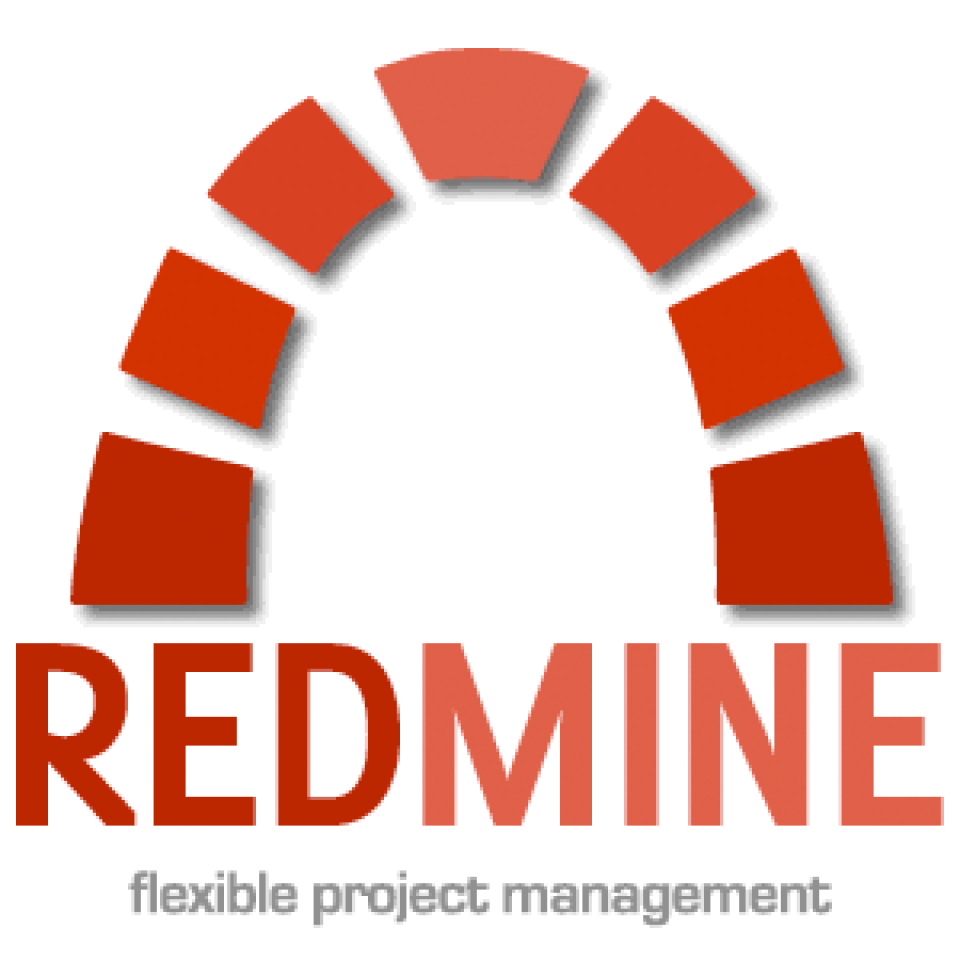
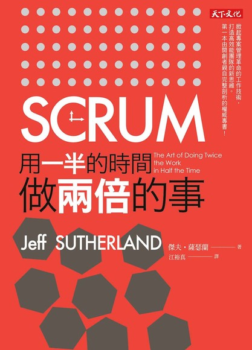
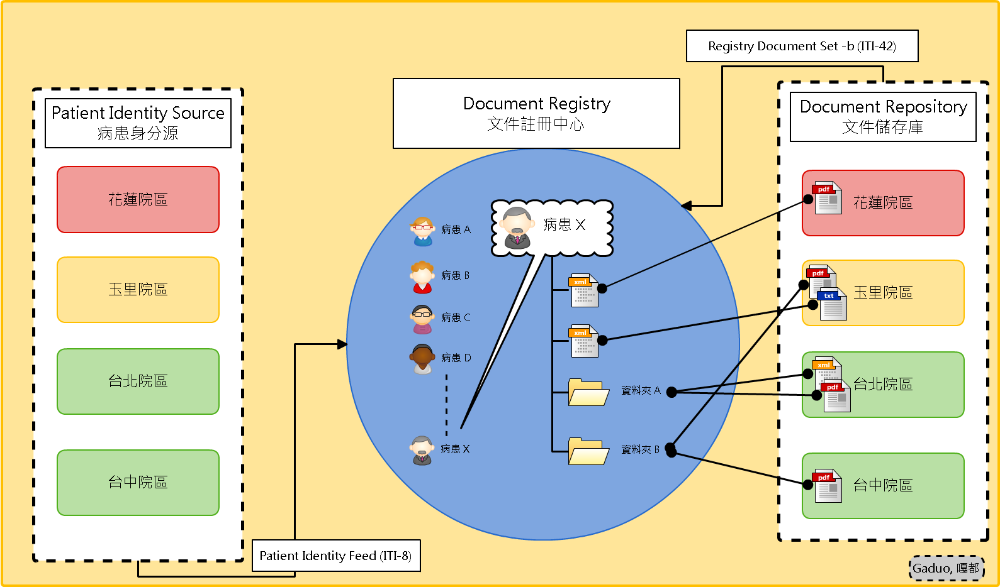
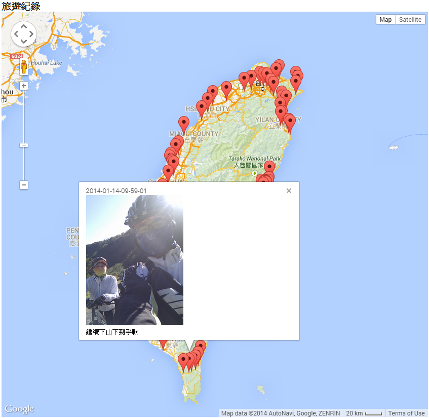
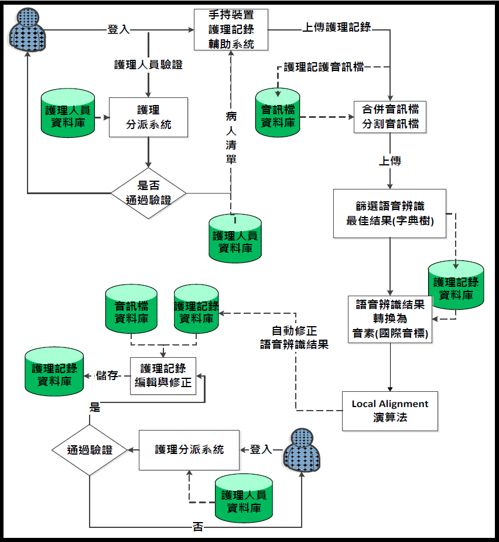
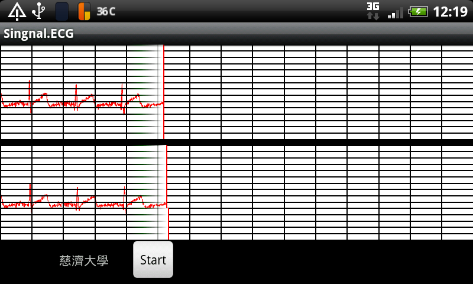
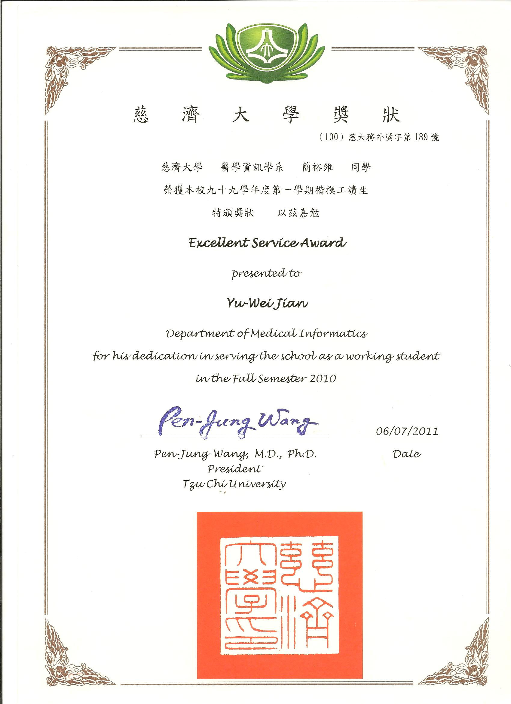

簡裕維 (嘎都, Gaduo)
gaduo.chien@gmail.com學歷：
- 碩士 (2013~2016)：
- 慈濟大學醫學資訊學研究所
- 學士 (2008~2013)：
- 慈濟大學醫學資訊學系
擅長程式語言：

|

|

|

|
 |
曾用專案平台：
 Spring Framework |
Android |
GAE |
 MongoDB |
Github
|
|
 Angular2
|
Tensorflow
|
GWT
|
Codeigniter |
 Arduino |
 Linux |
|
Logdown
|
Asp.net MVC
|
|
|
ZK
|
Jenkins |
 Redmine |
書籍：
|
|
 |
 |
活動：
|
COSCUP
|
作品/經歷：
碩士
- 2014, 使用自然語言處理技術從電子病歷中自動擷取冠心病危險因子以輔助冠心病回溯性研究
-
臨床上，當醫師欲得知心臟疾病病患的危險因子情況時，通常需閱讀病歷，進行病歷回顧。為減輕醫師的負擔並節省時間，本研究希望利用自然語言處理技術，建置自動化系統閱讀病歷，從臨床敘述文件中自動擷取出「心臟疾病危險因子」，產出草稿總結一篇病歷之心臟疾病危險因子，提供研究人員或醫師快速確認，以節省醫師在病歷回顧時的時間與人力。
本研究以花蓮某醫學中心入院病摘為例，利用自然語言處理技術，使用 cTAKES 及 MetaMap 分析臨床敘述文件，加上CRFs序列標記模型，搭配過濾機制，擷取入院病摘中與心臟疾病相關的目標詞彙。再搭配機器學習分類器，辨別目標詞彙的對象（病患/家人）及極值（有/沒有）。最後以決策模組，決定這篇入院病摘中，各心臟疾病危險因子的狀態，產出草稿，提供醫師快速確認危險因子。Spring Framework、 Restful API、 monongodb、 Apache cTAKES、 MetaMap、 CRFs、 Risk Factors
- 2013, IHE-C Connectathon 2013 (09/22 ~ 09/28)
-
延續 "建立新世代個人化雲端健康記錄醫療資訊服務系統"，這次前往北京天壇醫院聯測主要角色為：
- Cross-Enterprise Document Sharing (XDS)
- Cross-enterprise Document Sharing for Imaging (XDS-I)
- Patient Identifier Cross-Referencing (PIX)
- Patient Demographics Query (PDQ)
- Consistent-Time(CT)
圖1、醫院間資訊交換示意圖 圖2、聯測測試介面圖 - 上傳Spring Framework、 Apache Maven、 ZK、 OpenHealthTools、
圖2、聯測測試介面圖 - 上傳Spring Framework、 Apache Maven、 ZK、 OpenHealthTools、
apache axis2、 Oracle DataBase
碩士前暑期
- 2013, 輔導記錄登錄系統
-
提供平台，讓教師在輔導學生後，登錄輔導記錄，因應各處室需求，收集並統整記錄內容，提供教師評鑑之評鑑依據。
- PDF：報告書
asp.net mvc4、 MSSQL
學士
- 2013, IHE-C Connectathon 2013 (03/17 ~ 03/23)
-
是與台北醫學大學產學合作的計畫 - 建立新世代個人化雲端健康記錄醫療資訊服務系統，建立醫療雲端服務，記錄健康記錄。
遵照 IHE 的規範實作，計畫完成的模組有 Cross-Enterprise Document Sharing (XDS) 之中的 Repository, Registry，分別是健康記錄分散儲存及索引集中管理。
為什麼要遵照 IHE 規範? 在健康記錄交換時，常遇到廠商間有不同的交換規格，對於醫院來說，招標系統廠商開發或維護系統，都需要很大的成本;而遵照IHE規範的概念即是讓醫療系統模組能"熱插拔"，當所有廠商按照標準記錄內容，建立相同的交換架構時，便能讓系統間的耦合度降低，以達到取代性及可擴充性。
Pre-Connectathon (聯測前)，大會會請各廠商用規定的軟體測試系統，並上傳測試結果，完成一定比例後，便招集各廠商，像IHE-China，則到北京天壇醫院進行為期5天的測試，並規定每個Use Case，使每個廠商扮演一個系統角色，且必須與三家(以上)不同角色的廠商進行連接測試，大約有一兩百項的Use Case(視報名的系統角色而定)。若在五天內完成所有項目，大會則會發給證明。
 圖3、本計劃基礎建設架構圖
圖3、本計劃基礎建設架構圖- 外部連結：GitHub，IHE-IT-Infrastructure
- 外部連結：Logdown 網誌說明 IHE 相關資訊
- 照片：聯測照片
Spring Framework、 Apache Maven、 ZK、 OpenHealthTools、
apache axis2、 Oracle DataBase
- 2012, Google App Engine (GAE)
-
GAE作品之一的「慈濟大學排球代表隊」網站，由先前的PHP網站改版而來，因為GAE提供免費且穩定的平台，所以將網站移植至此。
GAE 是個讓學生可以充分發揮的作業平台，它有完整的MVC架構及Google 服務，能實現許多功能，使作品充實且完整。除了「慈濟大學排球代表隊」網站外，還有環島地圖等也移植至此。
圖4、環島地圖Google App Engine (Python)、 Android
- 2012, 邊做、邊說、邊記-隨身護理記錄輔助系統
-
大學畢業專題，開發一套隨身護理記錄輔助系統，幫助護理人員在照護病人完畢後，可以利用說話的方式記錄護理記錄，使得護理記錄具有完整性並節省記錄的時間。
圖5、隨身護理記錄輔助系統-架構圖- 連結：專題摘要
Java、 Android、 Codeigniter、 MySQL
- 2011, Android 小專案
-
圖6、心電圖Java、 Android
- 2010, PHP 商務網頁、校排球代表隊網頁
- PHP、 MySQL
.png)
.png)
.png)
- 2009, 電算中心工讀生(至畢業)
-
工作主要內容：
- 維修電腦
- 設定電腦周邊設備
- 網路管理(含牽線、拆裝網路設備)
工讀期間向中心的大哥們學習如何架設Server及維修電腦，只要有心學習，大哥們都很樂於分享自己解決問題的經驗，週末會一同騎單車出遊，即使是工讀生也少不了期末聚餐。
圖6、楷模工讀生獎狀- 照片：楷模工讀生